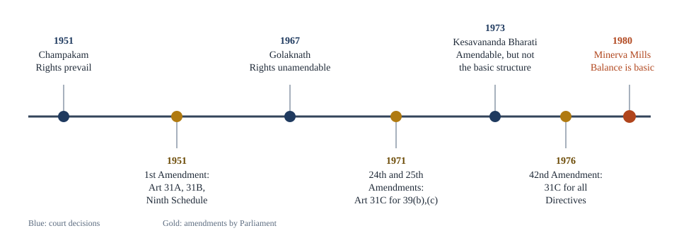

Chapter 4: Directive Principles and Fundamental Duties¶
The goals the Constitution sets for the State, and the duties it asks of citizens
Learning outcomes
When you have finished this chapter you should be able to:
- explain what the Directive Principles of State Policy are and why they were made non-justiciable;
- classify the Directive Principles into socialist, Gandhian and liberal-intellectual groups, with their articles;
- identify the principles added by later amendments;
- trace the relationship between Fundamental Rights and Directive Principles through the main cases, from Champakam Dorairajan to Minerva Mills;
- give examples of laws and policies that implement the Directive Principles;
- list the Fundamental Duties and explain their status.
4.1 The idea of Directive Principles¶
Part III of the Constitution tells the State what it must not do: it must not discriminate, must not take away liberty without fair procedure, must not suppress speech without good reason. But the framers also wanted to tell the State what it should do: secure a decent livelihood for all, protect workers and children, spread education, raise nutrition and public health, protect the environment. These positive goals are set out in Part IV, the Directive Principles of State Policy (Articles 36 to 51).
The idea came from the Irish Constitution of 1937, which contained "directive principles of social policy". Dr Ambedkar compared the Directive Principles to the Instruments of Instructions that the British government used to issue to the Governor-General and Governors under the Government of India Act, 1935: the difference was that these instructions were addressed to the governments of free India, and the people would judge them by how well they followed them.
Article 37: not enforceable, but fundamental¶
Article 37 states the legal character of Part IV in two sentences. The provisions of Part IV "shall not be enforceable by any court", but the principles laid down in it are "nevertheless fundamental in the governance of the country", and it shall be "the duty of the State to apply these principles in making laws".
Why were they made non-justiciable? The usual reasons are these.
- Resources. In 1950 the State did not have the money to provide, for example, work, education and public assistance for all at once. A court cannot order the State to do what it cannot afford.
- Flexibility. Different governments might choose different means and different speeds. The framers did not want to tie the hands of future legislatures to a particular economic programme.
- Backwardness and diversity. Conditions varied widely across the country, and uniform enforcement would have been impractical.
Article 36 gives "the State" in Part IV the same meaning as in Part III (Article 12), so the directives are addressed to the Union, the States, and local and other authorities.
Key idea
Fundamental Rights are limits on the State and are enforced by the courts. Directive Principles are goals for the State and are enforced by the political process: by legislation, by policy and ultimately by voters. Article 37 makes them non-justiciable but fundamental in governance.
| Fundamental Rights | Directive Principles | |
|---|---|---|
| Part | III (Articles 12–35) | IV (Articles 36–51) |
| Nature | Mostly negative: prohibitions on the State | Positive: instructions to the State |
| Enforceable in court? | Yes (Articles 32 and 226) | No (Article 37) |
| Aim | Political democracy; protection of the individual | Social and economic democracy; a welfare state |
| Effect on laws | A law violating them is void | A law is not void for violating them |
| Source | United States (Bill of Rights) | Ireland |
| Suspension | Can be suspended in an emergency (except Articles 20, 21) | Not applicable |
Table 4.1. Fundamental Rights and Directive Principles compared.
4.2 The principles, classified¶
The Constitution does not group the Directive Principles, but they are usually arranged in three broad categories according to the ideas behind them.
Socialist principles¶
These reflect the ideal of a welfare state and aim at social and economic justice.
- Article 38: the State shall strive to promote the welfare of the people by securing a social order in which justice, social, economic and political, informs all institutions of national life; and (clause 2, added in 1978) shall strive to minimise inequalities in income, status, facilities and opportunities.
- Article 39: the State shall direct its policy towards securing (a) an adequate means of livelihood for all citizens, men and women equally; (b) that the ownership and control of the material resources of the community are distributed to subserve the common good; (c) that the operation of the economic system does not result in the concentration of wealth and means of production to the common detriment; (d) equal pay for equal work for men and women; (e) that the health and strength of workers and the tender age of children are not abused; and (f) that children are given opportunities to develop in a healthy manner and in conditions of freedom and dignity.
- Article 39A: equal justice and free legal aid.
- Article 41: the right to work, to education and to public assistance in cases of unemployment, old age, sickness and disablement, within the limits of the State's economic capacity.
- Article 42: just and humane conditions of work and maternity relief.
- Article 43: a living wage and a decent standard of life for all workers.
- Article 43A: participation of workers in the management of industries.
- Article 47: raising the level of nutrition and the standard of living, and improving public health.
Gandhian principles¶
These reflect the programme of reconstruction associated with Mahatma Gandhi.
- Article 40: organise village panchayats and give them the powers needed to function as units of self-government.
- Article 43: promote cottage industries on an individual or co-operative basis in rural areas.
- Article 43B: promote the voluntary formation, autonomous functioning, democratic control and professional management of co-operative societies.
- Article 46: promote with special care the educational and economic interests of the weaker sections, in particular the Scheduled Castes and Scheduled Tribes, and protect them from social injustice and exploitation.
- Article 47: bring about the prohibition of the consumption, except for medicinal purposes, of intoxicating drinks and of drugs injurious to health.
- Article 48: prohibit the slaughter of cows and calves and other milch and draught cattle, and improve their breeds.
Liberal-intellectual principles¶
These reflect the ideals of liberalism and modern administration.
- Article 44: secure for citizens a uniform civil code throughout the territory of India.
- Article 45: provide early childhood care and education for all children until they complete the age of six years.
- Article 48: organise agriculture and animal husbandry on modern and scientific lines.
- Article 48A: protect and improve the environment and safeguard the forests and wildlife of the country.
- Article 49: protect monuments and places and objects of artistic or historic interest declared to be of national importance.
- Article 50: separate the judiciary from the executive in the public services of the State.
- Article 51: promote international peace and security, maintain just and honourable relations between nations, foster respect for international law and treaty obligations, and encourage the settlement of international disputes by arbitration.
Overlapping categories
Articles 43, 47 and 48 appear in two categories because they contain more than one idea. Article 47 joins nutrition and public health (socialist) with prohibition (Gandhian); Article 48 joins scientific agriculture (liberal) with the protection of cattle (Gandhian). The classification is a teaching aid, not part of the Constitution.
Principles added by amendments¶
| Amendment | Change |
|---|---|
| 42nd (1976) | Article 39(f) (healthy development of children); Article 39A (equal justice and free legal aid); Article 43A (workers' participation in management); Article 48A (environment, forests and wildlife) |
| 44th (1978) | Article 38(2) (minimise inequalities in income, status, facilities and opportunities) |
| 86th (2002) | Article 45 substituted: early childhood care and education until six (free and compulsory education from six to fourteen became a Fundamental Right in Article 21A) |
| 97th (2011) | Article 43B (co-operative societies) |
Table 4.2. Directive Principles added or changed by amendments.
Directives outside Part IV
A few directions to the State appear elsewhere in the Constitution and are also non-justiciable: Article 335 (the claims of Scheduled Castes and Scheduled Tribes to services, consistently with efficiency of administration), Article 350A (instruction in the mother tongue at the primary stage for children of linguistic minorities) and Article 351 (development of the Hindi language).
4.3 Rights versus directives: from conflict to harmony¶
Because the Directive Principles ask the State to redistribute wealth and land, and the Fundamental Rights originally protected property, the two were bound to clash. The history of that clash is a history of exchanges between the courts and Parliament, shown in Figure 4.1.

- Rights prevail (1951). In State of Madras v. Champakam Dorairajan (1951), the Supreme Court struck down a government order reserving seats in medical and engineering colleges by community. It held that the Directive Principles must conform to and run subsidiary to the Fundamental Rights. Parliament responded with the 1st Amendment (1951), which added Article 15(4) and the Ninth Schedule.
- Rights cannot be amended (1967). In Golaknath v. State of Punjab (1967), the Court held that Parliament could not amend Fundamental Rights at all, even to implement the Directive Principles.
- Parliament replies (1971). The 24th Amendment asserted Parliament's power to amend any part of the Constitution, including Part III. The 25th Amendment inserted Article 31C: a law giving effect to the principles in Article 39(b) and (c) shall not be void for violating Articles 14 or 19, and no such law containing a declaration that it is for giving effect to those principles shall be questioned in court on the ground that it does not give such effect.
- The basic structure (1973). In Kesavananda Bharati v. State of Kerala (1973), the Court overruled Golaknath: Parliament can amend Fundamental Rights, but not the basic structure. It upheld the first part of Article 31C but struck down the second part, the declaration that barred judicial review.
- Directives above rights (1976). The 42nd Amendment extended the protection of Article 31C to laws implementing any of the Directive Principles, not only Article 39(b) and (c).
- Balance is basic (1980). In Minerva Mills v. Union of India (1980), the Court struck down this extension. It held that the Constitution rests on the balance and harmony between Parts III and IV; giving absolute primacy to one over the other would disturb that harmony, and the harmony itself is part of the basic structure. Article 31C stands as it was after Kesavananda, covering Article 39(b) and (c) only.
Key idea
The present position comes from Minerva Mills (1980): Fundamental Rights and Directive Principles are complementary, neither is subordinate to the other, and the balance between them is part of the basic structure. Laws implementing Article 39(b) and (c) are protected from challenge under Articles 14 and 19 by Article 31C.
Directives as a guide to interpretation¶
Apart from this history, the courts use the Directive Principles in two everyday ways.
- To interpret rights. Many rights read into Article 21, such as livelihood, health, education, legal aid and a clean environment, draw directly on Articles 39A, 41, 45, 47 and 48A.
- To judge reasonableness. A restriction on a Fundamental Right that promotes a Directive Principle is more likely to be held reasonable. For instance, a law regulating a trade in order to protect public health (Article 47) is more easily upheld under Article 19(6).
Material resources of the community
In Property Owners Association v. State of Maharashtra (November 2024) a nine-judge bench of the Supreme Court considered the meaning of "material resources of the community" in Article 39(b). The majority held that not every privately owned resource falls within the phrase merely because it meets a material need; whether a particular resource does depends on its nature and its effect on the community. Questions of this kind show that the boundary between Parts III and IV is still being worked out.
Worked example 4.1: A law and the Directive Principles
Situation. A State enacts a law fixing a ceiling on agricultural landholdings and distributing the surplus land to landless labourers. A landowner challenges it under Article 14, saying it treats large landowners unfairly. The law states that it is for giving effect to Article 39(b) and (c).
Answer. Article 31C protects a law giving effect to Article 39(b) (distribution of material resources for the common good) and 39(c) (preventing concentration of wealth) from being declared void for violating Article 14 or 19. Since Kesavananda Bharati, however, the declaration in the law is not conclusive: the court can examine whether the law really has a reasonable connection with those principles. If it does, the challenge under Article 14 fails. (Land reform laws are also commonly protected by Article 31A, and many have been placed in the Ninth Schedule, subject to I. R. Coelho.)
4.4 How the directives have been implemented¶
Although no court can order it, governments have passed many laws and launched many programmes in pursuit of the Directive Principles. A few examples:
| Directive | Laws and policies that implement it |
|---|---|
| 39(b), (c) | Land reform laws: abolition of intermediaries such as zamindars, tenancy reform, land ceilings |
| 39(d) | Equal Remuneration Act, 1976 (now part of the Code on Wages, 2019) |
| 39A | Legal Services Authorities Act, 1987; free legal aid through legal services authorities; Lok Adalats |
| 40 | 73rd Amendment (1992): constitutional status for panchayats |
| 41 | Social security pensions; the rural employment guarantee under the Mahatma Gandhi National Rural Employment Guarantee Act, 2005 |
| 42 | Maternity Benefit Act, 1961 |
| 43B | 97th Amendment (2011) on co-operative societies |
| 45 | Integrated Child Development Services and early childhood education |
| 47 | Nutrition programmes; prohibition laws in some States |
| 48A | Wildlife (Protection) Act, 1972; Forest (Conservation) Act, 1980; Environment (Protection) Act, 1986 |
| 50 | Code of Criminal Procedure, 1973, which separated judicial magistrates from the executive (its successor, the Bharatiya Nagarik Suraksha Sanhita, 2023, keeps the separation) |
Table 4.3. Examples of implementation.
The uniform civil code¶
Article 44 asks the State to "endeavour to secure" a uniform civil code for citizens: a common set of laws on marriage, divorce, inheritance, adoption and succession, in place of the personal laws of different religious communities. It is the most debated directive. Supporters argue that a common code would advance equality, especially gender equality, and national integration. Others argue that personal laws are part of religious and cultural freedom, that reform should come from within communities, and that uniformity should not be imposed. The Supreme Court has more than once urged the State to act on Article 44, for example in Mohd. Ahmed Khan v. Shah Bano Begum (1985) and Sarla Mudgal v. Union of India (1995). Goa has long had a common civil code inherited from the Portuguese period, and Uttarakhand enacted the Uttarakhand Uniform Civil Code Act, 2024 (passed by its Assembly in February 2024 and assented to by the President in March 2024); it was brought into force on 27 January 2025 and does not apply to members of Scheduled Tribes. There is no nationwide code.
Common confusion
Do not write that the uniform civil code is "required by the Constitution". Article 44 is a Directive Principle: it asks the State to endeavour to secure such a code, but it cannot be enforced by a court, and the form and timing of any code are left to the legislature.
4.5 Fundamental Duties¶
Origin¶
The original Constitution had no list of duties. During the emergency of 1975–77, the government set up the Swaran Singh Committee, which recommended adding duties of citizens. The 42nd Amendment (1976) inserted Part IVA, with one article, Article 51A, listing ten duties. The idea was influenced by the constitution of the former USSR. The 86th Amendment (2002) added an eleventh duty.
The eleven duties¶
Article 51A says that it shall be the duty of every citizen of India:
- to abide by the Constitution and respect its ideals and institutions, the National Flag and the National Anthem;
- to cherish and follow the noble ideals that inspired the national struggle for freedom;
- to uphold and protect the sovereignty, unity and integrity of India;
- to defend the country and render national service when called upon to do so;
- to promote harmony and the spirit of common brotherhood among all the people of India, transcending religious, linguistic and regional or sectional diversities, and to renounce practices derogatory to the dignity of women;
- to value and preserve the rich heritage of the country's composite culture;
- to protect and improve the natural environment, including forests, lakes, rivers and wildlife, and to have compassion for living creatures;
- to develop the scientific temper, humanism and the spirit of inquiry and reform;
- to safeguard public property and to abjure violence;
- to strive towards excellence in all spheres of individual and collective activity, so that the nation constantly rises to higher levels of endeavour and achievement;
- who is a parent or guardian, to provide opportunities for education to his child or ward between the ages of six and fourteen years (added in 2002).
(The list above follows the order of clauses (a) to (k) of Article 51A, in paraphrase.)
Status and enforcement¶
- Citizens only. Unlike many Fundamental Rights, the duties are addressed to citizens, not to all persons.
- Non-justiciable. The Constitution provides no direct penalty or court remedy for failing to perform them. They can, however, be enforced through ordinary laws that Parliament chooses to make.
- An aid to interpretation. Courts may refer to the duties in deciding whether a restriction on a right is reasonable. A law that gives effect to a Fundamental Duty, for example a law punishing insults to the National Flag, is more easily upheld.
- Many are already enforced by law. A committee chaired by Justice J. S. Verma, reporting in 1999 on how the duties could be put into practice, pointed to existing laws that give effect to several of them: the Prevention of Insults to National Honour Act, 1971; the Protection of Civil Rights Act, 1955; the Wildlife (Protection) Act, 1972; and the Forest (Conservation) Act, 1980, among others.
Some duties mirror directives
Several Fundamental Duties are the citizen's side of a Directive Principle. Article 48A asks the State to protect the environment; Article 51A(g) asks the citizen to do the same. Article 45 and Article 21A concern the State's provision of education; Article 51A(k) asks the parent to provide the opportunity.
Worked example 4.2: Can a duty be enforced?
Situation. A resident association asks a court to order a neighbour to stop dumping waste into a lake, citing the neighbour's duty under Article 51A(g) to protect the natural environment.
Answer. The court cannot enforce Article 51A(g) directly as a duty: Fundamental Duties are not justiciable in themselves. But the association is not without a remedy. The dumping is likely to violate environmental and municipal laws, which can be enforced against the neighbour, and the authorities' failure to act may be challenged as a violation of the right to a clean environment under Article 21, read with Article 48A. The court can use Article 51A(g) to support its reasoning.
Summary
- Directive Principles (Part IV, Articles 36–51), borrowed in idea from Ireland, are goals for the State. Under Article 37 they cannot be enforced by any court but are fundamental in governance, and the State must apply them in making laws.
- They are commonly classified as socialist (38, 39, 39A, 41, 42, 43, 43A, 47), Gandhian (40, 43, 43B, 46, 47, 48) and liberal-intellectual (44, 45, 48, 48A, 49, 50, 51).
- Amendments added 39(f), 39A, 43A and 48A (42nd), 38(2) (44th), the present Article 45 (86th) and 43B (97th).
- The relationship with Fundamental Rights moved from rights prevailing (Champakam Dorairajan, 1951) through Article 31C (1971) and Kesavananda Bharati (1973) to the doctrine of harmony and balance (Minerva Mills, 1980).
- Many laws implement the directives: land reform, legal aid, panchayats, labour and environmental laws. The uniform civil code (Article 44) remains a subject of debate.
- Fundamental Duties (Part IVA, Article 51A) were added by the 42nd Amendment (ten duties) and the 86th Amendment (the eleventh). They apply to citizens, are non-justiciable in themselves, and guide interpretation and legislation.
4.6 Exercises¶
Exercise 1
Quote the key words of Article 37 that state the legal status of the Directive Principles.
Answer
The provisions of Part IV "shall not be enforceable by any court", but the principles are "nevertheless fundamental in the governance of the country", and it is "the duty of the State to apply these principles in making laws".
Exercise 2
Classify the following as socialist, Gandhian or liberal-intellectual: Article 40, Article 44, Article 39(d), Article 48A, Article 46.
Answer
Article 40 (village panchayats): Gandhian. Article 44 (uniform civil code): liberal-intellectual. Article 39(d) (equal pay for equal work): socialist. Article 48A (environment): liberal-intellectual. Article 46 (interests of weaker sections, SCs and STs): Gandhian.
Exercise 3
What did the Supreme Court decide in Minerva Mills (1980) about the relationship between Parts III and IV?
Answer
It held that the Constitution is founded on the balance and harmony between Fundamental Rights and Directive Principles, that giving absolute primacy to the directives over the rights would destroy this balance, and that the balance is part of the basic structure. It therefore struck down the 42nd Amendment's extension of Article 31C to all Directive Principles; Article 31C protects only laws giving effect to Article 39(b) and (c).
Exercise 4
Name four Directive Principles inserted by the 42nd Amendment.
Answer
Article 39(f) (opportunities for healthy development of children), Article 39A (equal justice and free legal aid), Article 43A (workers' participation in management) and Article 48A (protection of the environment, forests and wildlife).
Exercise 5
How many Fundamental Duties are there now, which amendment added the last one, and what does it say?
Answer
Eleven. The 86th Amendment (2002) added Article 51A(k): a parent or guardian must provide opportunities for education to his child or ward between the ages of six and fourteen.
Exercise 6
"Directive Principles are useless because they cannot be enforced." Give two arguments against this statement.
Answer
Any two of: (1) They guide legislation, and a large body of law (land reform, labour, legal aid, panchayats, environment) has been made to implement them. (2) Courts use them to interpret Fundamental Rights, especially Article 21, and to judge whether restrictions are reasonable. (3) They are a standard by which voters can judge governments. (4) Since Minerva Mills, the balance between rights and directives is part of the basic structure, and Article 31C protects laws implementing Article 39(b) and (c).
4.7 Quiz¶
Check yourself: Directive Principles and Duties
Exercise 1
From which country's constitution was the idea of Directive Principles borrowed?
- United States
- Ireland
- Canada
- Former USSR
Answer
Ireland
Exercise 2
Which article says that the Directive Principles are not enforceable by any court?
- Article 36
- Article 37
- Article 38
- Article 51
Answer
Article 37
Exercise 3
Which Directive Principle asks the State to secure a uniform civil code?
- Article 39
- Article 40
- Article 44
- Article 48A
Answer
Article 44
Exercise 4
Which case held that the harmony between Fundamental Rights and Directive Principles is part of the basic structure?
- Champakam Dorairajan
- Golaknath
- Kesavananda Bharati
- Minerva Mills
Answer
Minerva Mills
Exercise 5
Which committee recommended the inclusion of Fundamental Duties?
Answer
Swaran Singh Committee / Swaran Singh
Exercise 6
Which article contains the Fundamental Duties?
- Article 21A
- Article 39A
- Article 51A
- Article 300A
Answer
Article 51A
Exercise 7
Match each Directive Principle with its subject.
| A | B |
|---|---|
| Article 40 | Environment |
| Article 39A | Separation of judiciary from executive |
| Article 48A | Village panchayats |
| Article 50 | Free legal aid |
Answer
Article 40 — Village panchayats; Article 39A — Free legal aid; Article 48A — Environment; Article 50 — Separation of judiciary from executive